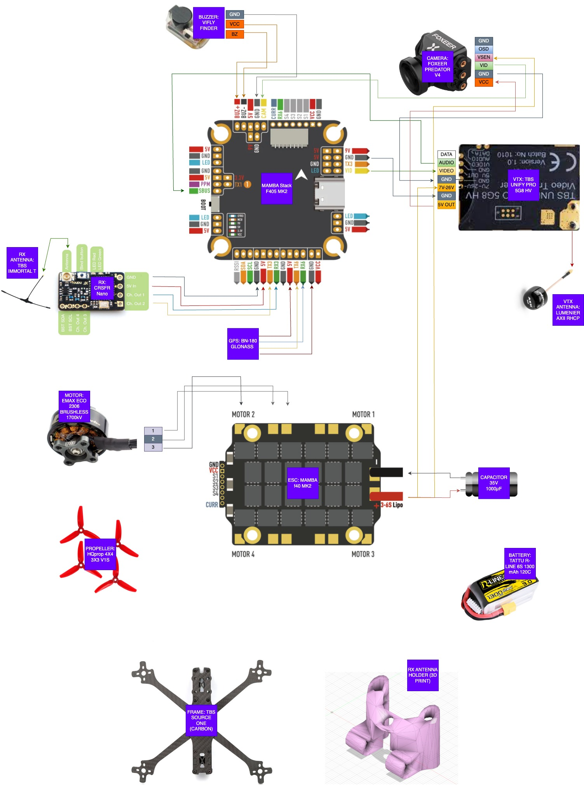

FPV Drone Design
FPV drone racing (where FPV stands for first-person view) is a sport type where participants control drones, equipped with cameras while wearing goggles showing the live stream camera feed from the drones.
Challenge
The guiding principle is to keep the pilot actively engaged, preserving the satisfaction and expertise of manual flying instead of shifting control to automated systems. Our goal was to find the sweet spot between efficiency and cost to explore our planet, achieving:
- Total drone cost under €150 (GoPro optional).
- Maximum radio control (TX) and FPV (VTX) transmission range for long-distance exploration.
- High-speed capability, even at the expense of battery life.
- GPS-based Return-to-Home (RTH) in the event of TX link failure.
- Comprehensive On-Screen Display (OSD) with telemetry (battery status, home point, altitude, latitude/longitude, etc.).
To meet these needs, I have chosen to assemble my drone from the following components:
- Frame: TBS SOURCE ONE V3
- Motors: EMAX ECO 2207 1700 kV (6S)
- Propellers: HQProp 5043 5x4.3
- Battery: TATTU R-LINE Version 3.0 22.2V 1300mAh 120C
- Flight Controller: MAMBA F405 MK2
- Camera: FOXEER PRADATOR V4
- VTX: TBS Unify Pro HV 5.8 GHz
- VTX Antenna: TBS TRIUMPH SMA 5.8GHz RHCP
- RX: TBS Crossfire Nano RX
- 4K Camera: GoPro Hero 7 Black (HyperSmooth)
- Radio: Taranis X9D+ with TBS Crossfire Micro TX V2
- Goggles: Fatshark HDO 2 with Rapidfire
- VRX Antenna: X2-AIR TrueRC + TRIUMPH SMA, 5.8GHz RHCP
Note: FPV flight requires extensive training. I recommend spending several months on a simulator such as Velocidrone or Liftoff, ideally using the real FPV remote control and goggles, to prepare both reflexes and spatial perception.
Setup
